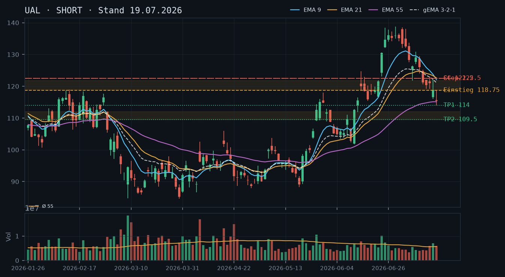
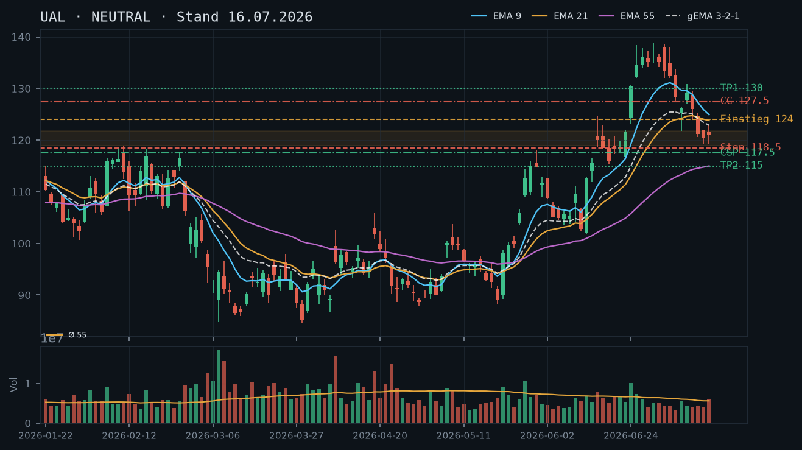
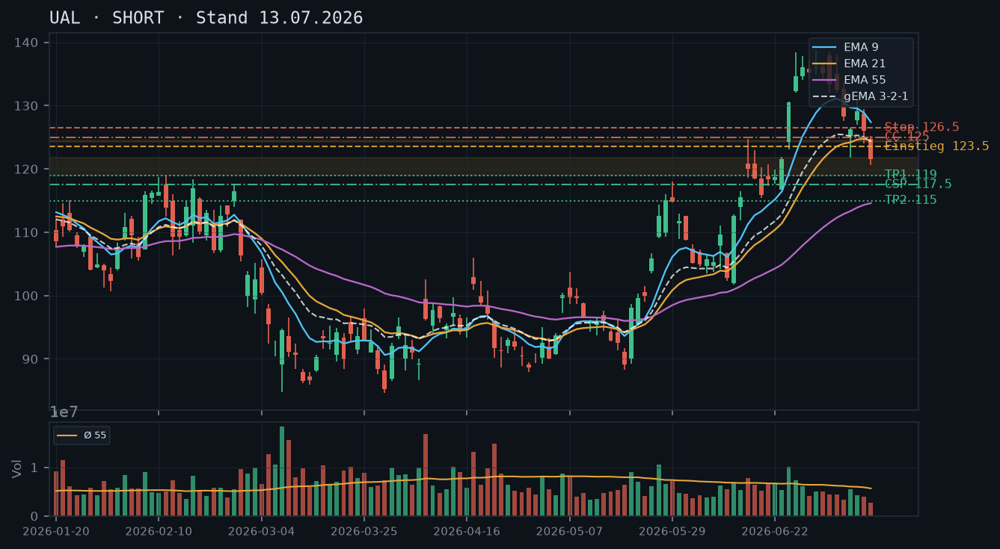
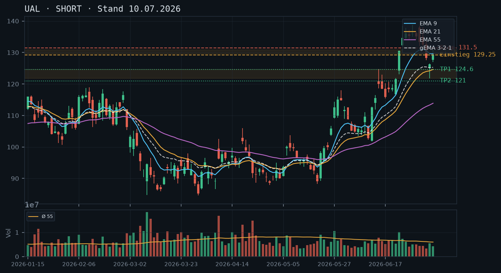
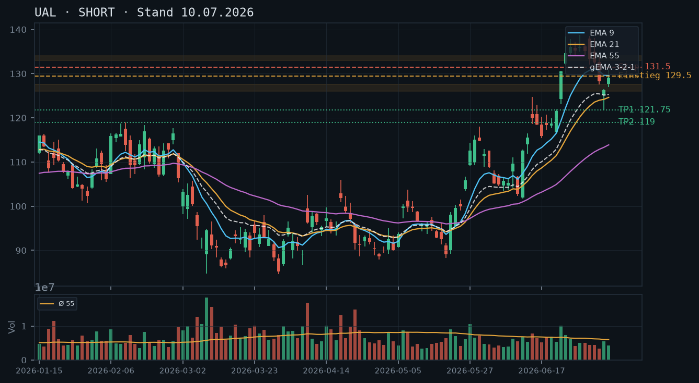
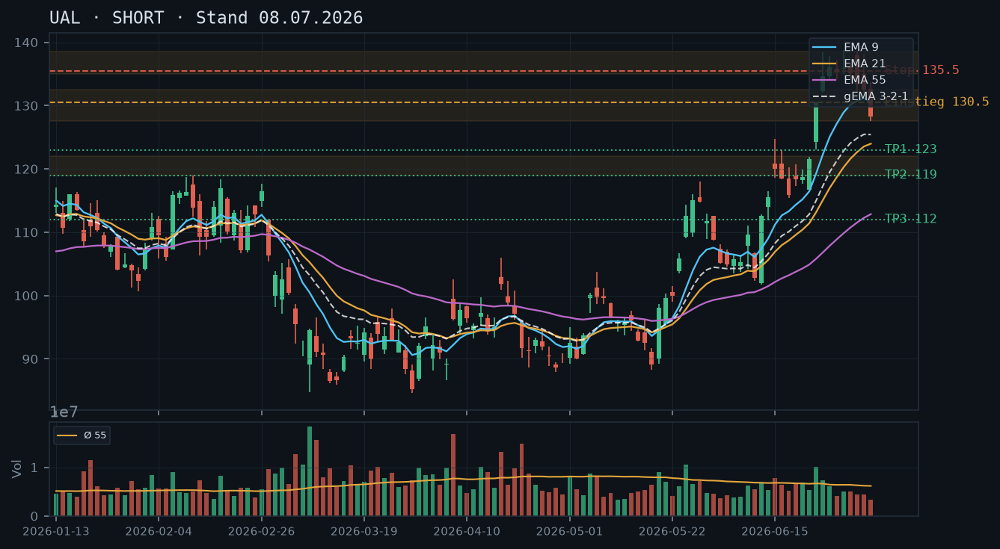

UAL
Analyse-Historie · neueste zuerstUAL setzt die strukturelle Korrektur fort – nach Bruch der 119er-Zone und gescheiterter Erholung zeigt der Kurs bei 116,62 keine Stabilisierungszeichen; alle EMAs fallen, der gema_321 fungiert als dynamischer Deckel, Short bleibt die trendkonforme These.

1 · Trendstruktur
UAL befindet sich seit dem Allzeithoch dieser Korrekturphase bei 138,77 (30.06.) in einem intakten Abwärtstrend mit klar definierten tieferen Hochs (138,77 → 138,10 → 130,81 → 129,50 → 122,12 → 119,64) und tieferen Tiefs (134,12 → 132,00 → 127,60 → 121,75 → 119,13 → 114,04). Die viermal bestätigte Supportzone 119–121 aus den Voranalysen ist seit dem 16./17.07. gebrochen – diese Einschätzung aus der 19.07.-Analyse wird durch die aktuellen Kursdaten vollständig bestätigt. Ein neuer tragfähiger Support ist kurzfristig nicht identifizierbar; der nächste relevante Bereich liegt bei 109,50–110,00 (Juni-Ausbruchsniveau / EMA55-Annäherung).
2 · Candlestick-Formationen
Die letzten drei Kerzen (21./22./23.07. intraday) zeigen ein einheitliches Bild: Der Kurs versucht Erholungen, schließt aber jeweils im unteren Drittel der Tagesrange ab. Die Kerze vom 22.07. (Open 115,74 / High 118,70 / Close 117,26) ist eine klassische Bärische Ablehnung an der Widerstandszone 118,00–119,00 – der Kurs erreichte intraday 118,70, zog sich aber zurück. Das aktuelle IBKR-Niveau von 116,62 liegt bereits unter dem gestrigen Schlusskurs, was den Abwärtsdruck am heutigen Tag bestätigt. Kein bullishes Umkehrmuster erkennbar – weder Hammer, Doji an Support noch Morning Star.
3 · EMA-Lage (9 / 21 / 55)
Alle drei EMAs fallen: EMA9 bei 119,81, EMA21 bei 121,33, EMA55 bei 115,39, gema_321 bei 119,58. Die Reihenfolge EMA9 < EMA21 (beide deutlich über dem Kurs) bestätigt den bearishen EMA-Stack. Bemerkenswert: Der EMA55 bei 115,39 nähert sich rapide dem aktuellen Kursniveau (116,62) – ein Test des EMA55 als nächste Unterstützung ist unmittelbar bevorstehend. Der Abstand Kurs–EMA9 beträgt nur noch ca. 3,2 USD, was zeigt, wie stark der Kurs unter Druck steht. Der gema_321 (119,58) fungiert als dynamischer Widerstandsverbund und liegt gut 3 USD über dem aktuellen Kurs.
4 · Trade-Setup
| Richtung | Short |
| Einstieg | 118,50 (Bounce-Verkauf unter gema_321 ~119,58 / EMA9 ~119,81; alternativ Limit-Order bei Intraday-Erholung in die Zone 117,50–118,70) |
| Stop | 122,50 (über letztem Lower High 122,12 vom 16.07. + Puffer) |
| Ziel | 110,00 (Ziel 1, Juni-Ausbruchsniveau / EMA55-Konvergenz) / 105,00 (Ziel 2, Juni-Konsolidierung) |
| CRV | 2,1 : 1 (Ziel 1) / 3,2 : 1 (Ziel 2) |
5 · Stillhalter (max. 12 Tage)
Im laufenden beschleunigten Abwärtstrend ohne tragfähigen, mehrfach bestätigten Support unterhalb von 114,00 ist ein neuer Cash-Secured Put nicht vertretbar – kein CSP-Setup. Der Naked Call auf Bounce-Niveau in die fallende EMA-Zone bleibt das einzig trendkonforme Stillhalter-Geschäft. Da laut IBKR-Snapshot (Stand 23.07. 11:37) kein UAL-Aktienbestand vorhanden ist (0 Aktien), handelt es sich ausdrücklich um einen Naked Call mit unlimitiertem Verlustpotenzial nach oben – nur für erfahrene Trader mit ausreichend Margin geeignet.
| Geschäft | Covered Call |
| Strike | 122.5 |
| Puffer | 5.0 % |
| Zone | über EMA9 (119,81) / gema_321 (119,58) / EMA21 (121,33) und über dem letzten Lower High 122,12 vom 16.07. |
| Verfall bis | 2026-08-01 (9 Tage) |
| Begründung | Strike 122,50 liegt oberhalb des gesamten fallenden EMA-Verbunds (EMA9 119,81 / gema_321 119,58 / EMA21 121,33) und knapp über dem jüngsten Lower High der Korrektur bei 122,12 (16.07.). Der Kurs müsste von aktuell 116,62 um ca. 5,0% steigen und dabei gleich mehrere fallende dynamische Widerstände überwinden. Dieser Strike stammt unverändert aus der 19.07.-Analyse und bleibt technisch valide – die Marktstruktur hat sich seither nicht verbessert. WICHTIG: Naked Call (0 UAL-Aktien laut IBKR) – unlimitiertes Verlustrisiko. Andienungsszenario entfällt beim Naked Call strukturell. Rollentrigger: Tagesschluss über 122,50 mit überdurchschnittlichem Volumen (rel_volumen > 1,3). In der Optionskette zu prüfen: Prämie im Verhältnis zum 5,0%-Puffer (mind. 0,80–1,20 USD anpeilen), Delta idealerweise < 0,20, Bid/Ask-Spread und Open Interest am 122,50er Strike für den Verfall 01.08.2026. |
Bestand: Laut IBKR-Snapshot (Stand 23.07. 11:37) bestehen keine offenen Optionspositionen in UAL und kein Aktienbestand. Die in der 19.07.-Analyse empfohlene Naked-Call-Position (Strike 122,50, Verfall 25.07.) läuft planmäßig aus oder wurde bereits geschlossen – ein Roll auf den 01.08.-Verfall ist bei aktuellem Kurs 116,62 und weiterhin intaktem Abwärtstrend sinnvoll, sofern die Position eingegangen wurde. Der Strike 122,50 bleibt technisch korrekt und bietet nach wie vor ausreichend Puffer.
Ausführliche Analyse vom 23.07.2026 anzeigen
UAL – Technische Analyse 23.07.2026
1. Trendstruktur – Abwärtstrend intakt, neue Tiefs im Fokus
Die Korrektur vom Hoch bei 138,77 (30.06.2026) setzt sich konsequent fort. Die Sequenz tieferer Hochs und tieferer Tiefs ist makellos: 138,77 → 138,10 → 130,81 → 129,50 → 122,12 → 119,64 auf der Hochseite; 134,12 → 132,00 → 127,60 → 121,75 → 119,13 → 114,04 auf der Tiefseite. Das Tief vom 17.07. bei 114,04 ist das relevante Swing-Low und gleichzeitig der nächste kritische Level – fällt der Kurs darunter, öffnet sich strukturell die Zone um 109,50–110,00 (Juni-Ausbruchsniveau Mitte Juni, Konsolidierungsbereich 04.–11.06. zwischen 102,78 und 109,63).
Die in den Voranalysen vom 13.07. und 16.07. als Kernsupport identifizierte Zone 119,00–121,75 wurde – wie in der 19.07.-Analyse antizipiert – gebrochen. Diese gebrochene Supportzone fungiert nun als Widerstand (klassisches Polarity-Prinzip). Der Kurs hat diese Zone am 22.07. mit dem Intraday-Hoch bei 118,70 getestet und wurde abgelehnt – Widerstandstest bestätigt. Die Voranalyse-These ist damit zu 100% bestätigt.
Übergeordnet ist zu beachten: Der langfristige Aufwärtstrend seit März 2026 (Tief 85,21 am 30.03.) ist formal noch intakt, solange die Zone um 100–105 hält. Die aktuelle Korrektur ist im Kontext eines massiven Anstiegs von ~85 auf ~138 (+63% in drei Monaten) strukturell gesund – aber kurzfristig domminiert eindeutig die bearishe Dynamik.
2. Candlestick-Formationen – Bärische Ablehnung an der Widerstandszone
Die Kerze vom 22.07.2026 ist die technisch bedeutsamste der jüngsten Serie: Open 115,74 / High 118,70 / Low 115,13 / Close 117,26. Der Kurs testete intraday die gebrochene Supportzone (nun Widerstand) bei 118,50–119,00 und zog sich zurück – eine klassische bärische Ablehnungskerze (Upper Shadow dominiert). Das Volumen war mit rel_volumen 0,74 (74% des 55er-Schnitts) unterdurchschnittlich, was typisch für schwache Erholungsversuche im Downtrend ist.
Die Kerze vom 21.07. (Open 119,27 / Close 117,70, rel_volumen 0,56) zeigt ein markantes Gap-Open nach oben, das jedoch vollständig geschlossen wurde – ein weiteres bearishes Signal. Die schwachen Volumina der Erholungsversuche (0,56 / 0,74) stehen im klaren Kontrast zu den stärkeren Volumen bei Abverkäufen (16.07.: rel_volumen 1,24; 17.07.: 1,06), was die Dominanz der Verkäufer bestätigt.
Aktuell (IBKR 11:37, Kurs 116,62) liegt der Kurs bereits unter dem gestrigen Schluss (117,26) – kein Stabilisierungszeichen am heutigen Tag.
3. EMA-Analyse – Bearisher Stack, EMA55-Test unmittelbar bevorstehend
Stand 22.07.: EMA9: 119,81 | EMA21: 121,33 | EMA55: 115,39 | gema_321: 119,58. Alle vier Indikatoren fallen – der bearishe EMA-Stack ist vollständig ausgebildet. Besonders relevant: Der EMA55 bei 115,39 nähert sich rapide dem aktuellen Kursniveau von 116,62. Ein Test des EMA55 ist innerhalb der nächsten 1–3 Handelstage zu erwarten.
Der EMA55 wäre in einem intakten übergeordneten Aufwärtstrend eine potenzielle Supportzone – aber Vorsicht: Der EMA55 fiel zuletzt (114,57 → 114,78 → 115,0 → 115,14 → 115,23 → 115,32 → 115,39) und dreht gerade erst nach oben – das ist kein stabiler Anker, sondern ein noch im Aufholmodus befindlicher Indikator. Ein EMA55-Test bei ~115 ohne gleichzeitige Verbesserung der Kerzenmuster (Hammer, Engulfing bullish) sollte nicht als Kaufsignal interpretiert werden.
Der Abstand Kurs (116,62) zu EMA9 (119,81) beträgt nur noch 3,19 USD – der Kurs ist in Reichweite des EMA9, was Bounce-Kandidaten-Phasen begünstigt, aber im Downtrend sind solche Bounces Verkaufsgelegenheiten, keine Trendwenden.
4. Trade-Setups (A/B/C)
Setup A (bevorzugt) – Bounce-Short in den fallenden EMA-Verbund:
Einstieg: 118,00–118,70 (Limit-Sell in die Ablehnungszone / unter gema_321 119,58)
Stop: 122,50 (über Lower High 122,12 + Puffer; Tagesschluss-Basis)
Ziel 1: 114,00 (Retest Tief 17.07.) – CRV ~1,0:1 bei Einstieg 118,50
Ziel 2: 110,00 (Juni-Ausbruchsniveau) – CRV ~1,9:1
Ziel 3: 105,00 (Juni-Konsolidierungszone) – CRV ~3,0:1
Kommentar: Das Setup ist trendkonform. Schwäche: Einstieg nicht trivial, da der Kurs bereits tief läuft. Geduld beim Warten auf den Bounce.
Setup B – Breakdown-Short unter EMA55 (aggressiver):
Einstieg: 115,00 (Stop-Sell unter EMA55 ~115,39 und unter dem Tief 17.07. als Bestätigung)
Stop: 118,50 (über der Widerstandszone)
Ziel 1: 110,00 – CRV ~1,4:1
Ziel 2: 105,00 – CRV ~2,9:1
Kommentar: Breakdown-Trade mit Momentum-Charakter. Höheres Slippage-Risiko, dafür klarer Trigger.
Setup C – Long (konträr, nur bei Bestätigung):
Einstieg: 124,00 (Stop-Buy über EMA21 + gema_321, nur bei Tagesschluss über 122,50 mit rel_volumen > 1,5)
Stop: 119,00 (unter gebrochene Supportzone)
Ziel: 130,00–132,00 (Retest Lower Highs)
CRV: ~1,2:1 (Ziel 130) / ~1,6:1 (Ziel 132)
Kommentar: Aktuell kein valides Setup – nur als Watchlist-Kandidat für den Fall eines bullishen Reversals.
5. Stillhalter-Setups – Schwerpunkt Naked Call
Cash-Secured Put: NULL – kein Setup
Der Bruch der Zone 119–121 und das Fehlen eines mehrfach bestätigten Supports unterhalb von 114,04 macht einen CSP aktuell nicht vertretbar. Das nächste potenzielle CSP-Fundament liegt erst bei 109,50–110,00 (Ausbruchsniveau Juni), das wären ca. 6% Puffer vom aktuellen Kurs – prüfenswert erst, wenn diese Zone erneut mehrfach getestet und gehalten wurde. Aus den Voranalysen (13.07./16.07.) war der CSP-Strike 117,50 korrekt gesetzt, aber der definierte Rollentrigger (Bruch 119,00) hätte gemäß 19.07.-Analyse zur Schließung geführt – diese Logik war richtig.
Naked Call Strike 122,50 – Verfall 01.08.2026 (9 Tage):
Die Zonen-Herleitung des Strikes ist identisch zur 19.07.-Analyse und wird bestätigt: Strike 122,50 liegt über (1) EMA9 (119,81), (2) gema_321 (119,58), (3) EMA21 (121,33) und (4) dem letzten Lower High der Korrektur bei 122,12 (16.07.). Jeder dieser vier Faktoren ist ein einzelnes Hindernis für den Kurs – gemeinsam bilden sie einen Konfluenz-Widerstandscluster, den der Kurs in 9 Tagen von 116,62 aus mit einem Anstieg von 5,0% überwinden müsste.
Andienungsszenario Naked Call: Entfällt – bei einem Naked Call gibt es keine Aktien-Andienung, sondern eine Cash-Settlement-Verpflichtung. Das Risiko ist nach oben unlimitiert. Der Roll-Trigger ist präzise: Tagesschluss über 122,50 mit rel_volumen > 1,3 → sofortiger Roll auf nächsten Verfall, Strike auf 125,00 anheben (nächster relevanter Widerstand: alter Körper-Bereich 06./07.07. bei ~133–134 ist zu weit; 125,00 wäre über dem EMA-Cluster zu erwarten).
Was in der Optionskette zu prüfen ist (Verfall 01.08.2026, Strike 122,50):
- Prämie (Zielgröße: mind. 0,80–1,20 USD bei 5,0% Puffer, sonst lohnt das Risiko nicht)
- Delta: idealerweise zwischen -0,15 und -0,22 (unter -0,25 wird die Position zu aggressiv)
- Bid/Ask-Spread: bei UAL-Optionen typisch eng – prüfen ob Spread unter 0,20 USD
- Open Interest am 122,50er Strike für 01.08.: mind. 200 Kontrakte als Liquiditätsminimum
- Implizite Volatilität (IV): Nach Earnings-Saison oft rückläufig – prüfen ob IV-Crush das Prämienniveau belastet
Abwesenheit offener Positionen (IBKR-Bestätigung): Laut Snapshot (23.07. 11:37) sind keine UAL-Positionen offen. Der in der 19.07.-Analyse empfohlene Naked Call 122,50 (Verfall 25.07.) läuft in 2 Tagen aus und ist bei aktuellem Kurs 116,62 weit aus dem Geld – maximaler Gewinn aus der Prämie wahrscheinlich. Ein Roll auf 01.08. mit Strike 122,50 ist bei Tagesschluss heute als neue Position sinnvoll, sofern die Optionskette die Prämienkriterien erfüllt.
UAL setzt die Korrektur beschleunigt fort – nach Bruch der viermal bestätigten Supportzone 119–121 am 16./17.07. fehlt nun ein tragfähiger Boden bis zur EMA55-Region um 115, die Short-These der Voranalysen wird brutal bestätigt und auch der CSP-Strike 117,50 steht akut unter Druck.

1 · Trendstruktur
Der kurzfristige Abwärtstrend verschärft sich: Nach dem Korrekturbeginn am Allzeithoch 138,77 (30.06.) folgte ein Serie tieferer Hochs und Tiefs – zuletzt Hoch 122,12 (16.07.) nach vorherigem 120,97/122,94. Am 16./17.07. wurde die bis dato viermal verteidigte Supportzone 119,00–121,75 nach unten gebrochen. Das Tief vom 17.07. bei 114,04 markiert nun das tiefste Niveau seit Anfang Mai. Nächste relevante Unterstützung: EMA55 bei 115,14 (bereits fast erreicht) und die Mai-Konsolidierungszone 92–100. Der übergeordnete Aufwärtstrend seit März bleibt strukturell intakt, ist kurzfristig aber irrelevant.
2 · Candlestick-Formationen
Der 16.07. brachte eine große Bearish-Kerze mit Eröffnungsgap nach unten (Open 116,64, Tief 116,05, Close 118,81) – technischer Bruch der 119er-Supportzone, rel. Volumen 1,24 (überdurchschnittlich). Der 17.07. setzte nach: Eröffnung 115,60, Tief 114,04, Close 115,41 – eine weitere Bearish-Kerze mit kleinem unteren Docht. Kein Reversal-Signal, kein Hammer, kein engulfing bullish. Die Kerzenstruktur spricht klar für anhaltenden Verkaufsdruck.
3 · EMA-Lage (9 / 21 / 55)
Der EMA-Verbund ist vollständig bärisch geordnet: EMA9 (122,05) > EMA21 (122,60) – hier liegt aktuell ein Kompressions-Artefakt, da EMA9 minimal unter EMA21 liegt (122,05 vs. 122,60), was die Konvergenz im Abwärtstrend widerspiegelt. EMA55 bei 115,14, gema_321 bei 121,08. Der Kurs (115,41 Close 17.07.) notiert erstmals seit Wochen unter dem EMA55 bzw. erreicht ihn von oben – kritische Schwelle. Alle gleitenden Mittel zeigen fallenden Verlauf oder flachen ab, kein bullisher Crossover in Sicht.
4 · Trade-Setup
| Richtung | Short |
| Einstieg | 118,50–119,00 (Bounce-Verkauf unter die gebrochene Supportzone / altem EMA21-Niveau) |
| Stop | 122,50 (über jüngstem Lower High 122,12 vom 16.07. + Puffer) |
| Ziel | 114,00 (Ziel 1, Retest Tief 17.07.) / 109,50 (Ziel 2, Juni-Ausbruchsniveau) |
| CRV | 2,2 : 1 (Ziel 1) / 3,4 : 1 (Ziel 2) |
5 · Stillhalter (max. 12 Tage)
Der Bruch der 119er-Zone macht den CSP-Strike 117,50 aus der Voranalyse akut gefährdet – ein neuer CSP in diesem beschleunigten Abwärtstrend ohne klar definierten, mehrfach bestätigten Support ist nicht vertretbar. Der Covered Call auf Bounce-Niveau bleibt das einzig sinnvolle Stillhalter-Geschäft, allerdings entfällt die Covered-Call-Basis mangels Aktienbestand (laut IBKR: 0 Aktien). Das CC-Setup wird daher als Naked Call ausgewiesen – mit entsprechend erhöhtem Risikoprofil (unlimitiertes Verlustpotenzial nach oben). CSP: null, da kein tragfähiger Support identifizierbar ist.
| Geschäft | Covered Call |
| Strike | 122.5 |
| Puffer | 3.1 % |
| Zone | über gebrochener Supportzone 119–121 (jetzt Widerstand) und über EMA9/EMA21-Cluster 122,05/122,60 |
| Verfall bis | 2026-07-25 (6 Tage) |
| Begründung | Strike 122,50 liegt oberhalb des EMA9/EMA21-Clusters (122,05/122,60), der nach dem Bruch der Supportzone nun als dynamischer Widerstand fungiert. Ein Anstieg auf dieses Niveau erfordert eine vollständige Erholung zur gebrochenen Zone – strukturell unwahrscheinlich im laufenden Abwärtstrend. Puffer 3,1% vom IBKR-Kurs 118,81. WICHTIG: Da kein UAL-Aktienbestand vorliegt (IBKR: 0 Aktien), ist dies ein Naked Call mit unlimitiertem Verlustrisiko – nur für erfahrene Trader mit ausreichend Margin geeignet. Rollentrigger: Tagesschluss über 122,60 (EMA21) mit Volumen. In der Optionskette zu prüfen: Prämie im Verhältnis zum 3,1%-Puffer, Delta idealerweise < 0,25, Bid/Ask-Spread und Open Interest am 122,50er Strike. |
Bestand: Laut IBKR-Snapshot (Stand 19.07. 12:10) bestehen keine offenen Optionspositionen in UAL. Der CSP 117,50 aus den Voranalysen (13.07./16.07.) ist damit entweder ausgelaufen oder wurde geschlossen. Der Bruch von 119,00 hätte gemäß der damals definierten Rollentrigger eine sofortige Rollentscheidung ausgelöst – nachträglich war die Empfehlung, bei Unterschreitung 119,00 zu reagieren, korrekt.
Ausführliche Analyse vom 19.07.2026 anzeigen
UAL – Technische Analyse 19.07.2026
1. Trendstruktur – Bestätigung und Eskalation der Short-These
Die Short-These aus den Analysen vom 10.07., 13.07. und 16.07. wurde vollständig bestätigt und hat sich nun beschleunigt. Das Hoch bei 138,77 (30.06.) markiert den Korrekturbeginn. Die Sequenz tieferer Hochs: 138,51 (02.07.) → 138,10 (06.07.) → 130,81 (09.07.) → 125,24 (13.07.) → 122,94 (15.07.) → 122,12 (16.07.) ist lückenlos. Die Sequenz tieferer Tiefs: 132,06 (02.07.) → 127,60 (07.07.) → 121,75 (08.07.) → 119,13/119,20 (14./15.07.) → 116,05 (16.07.) → 114,04 (17.07.) ist ebenfalls intakt.
Kritisches Ereignis: Der in der 16.07.-Analyse als Doppelboden-Kandidat markierte Support 119,00–121,75 wurde am 16.07. (Close 118,81) und 17.07. (Tief 114,04, Close 115,41) klar nach unten gebrochen. Die damalige Aussage 'viermal bestätigte Zone als CSP-Fundament' ist damit hinfällig – dieser Support ist gebrochen und fungiert jetzt als Widerstand. Die 16.07.-Analyse wäre mit ihrem 'Neutral'-Urteil rückblickend zu optimistisch; die Short-Bestätigung unter 118,80 (damaliger Trigger) hätte aktiviert werden müssen.
Nächste Unterstützungszonen: EMA55 bei 115,14 (bereits nahezu erreicht), darunter das Ausbruchsniveau der starken Maibewegung bei ca. 109,50–112,00 (Ausbruch 27./28.05. aus der langen Seitwärtsphase) und die breite Basis der Mai-Konsolidierung bei 92,00–100,00.
2. Candlestick-Formationen
Der 16.07. (rel. Volumen 1,24×): Bearish-Kerze, Eröffnung 116,64 mit Gap nach unten, Tief 116,05, Close 118,81 – trotz leichter Erholung am Ende bleibt der Schlusskurs unter der kritischen 119er-Marke. Das überdurchschnittliche Volumen (1,24×) beim Bruch gibt dem Signal erhebliches Gewicht.
Der 17.07. (rel. Volumen 1,06×): Weitere Bearish-Kerze, Eröffnung 115,60, Tief 114,04, Close 115,41. Kleiner unterer Docht deutet auf minimalen Kaufversuch an der EMA55, aber keine Reversal-Kerze. Kein Hammer, kein Doji, kein bullishes Engulfing. Zwei aufeinanderfolgende closes unter 119 mit erhöhtem Volumen: klares Verkaufssignal.
IBKR-Snapshot zeigt Kurs 118,81 am 19.07. mittags – das impliziert eine Erholung vom 17.07.-Tief 114,04 zu Wochenbeginn. Ohne heutige Schlusskursdaten ist Vorsicht geboten: Dieser Bounce könnte ein Retest der gebrochenen 119er-Zone darstellen, was das Short-Setup begünstigt.
3. EMA-Lage und Verbund
EMA9: 122,05 | EMA21: 122,60 | EMA55: 115,14 | gema_321: 121,08. Der Kurs (115,41 am 17.07. / 118,81 laut IBKR am 19.07.) liegt klar unter EMA9 und EMA21 – beide funktionieren als dynamischer Widerstand. Die Tatsache, dass EMA9 (122,05) minimal unter EMA21 (122,60) notiert, ist ein Kompressions-Artefakt: Beide EMAs laufen eng zusammen und fallen, was die Stärke des Abwärtstrends unterstreicht. Der EMA55 bei 115,14 wird erstmals seit dem Korrekturtiefpunkt im März 2026 (86,53) von oben angelaufen – ein psychologisch wichtiges Level. Der gema_321 (121,08) bestätigt die bärische Gesamtlage des gewichteten Verbunds.
4. Trade-Setups (A/B/C)
Setup A – Bevorzugt: Bounce-Short (hohes CRV)
Einstieg: 118,50–119,00 (Retest der gebrochenen Supportzone / jetzt Widerstand)
Stop: 122,50 (über EMA9/EMA21-Cluster 122,05/122,60)
Ziel 1: 114,00 (Retest Tief 17.07.) – CRV: ca. 2,2:1
Ziel 2: 109,50 (Ausbruchsniveau Mai, Confluence mit aufsteigendem EMA55) – CRV: ca. 3,4:1
Logik: Gebrochener Support wird zum Widerstand. Der aktuelle IBKR-Kurs 118,81 liegt genau in dieser Zone – falls der Kurs am 19.07. um die 119er-Marke dreht und am Tages-End schließt, ist das ein klassischer Backtest-Short.
Setup B – Aggressiv: Direkter Short bei aktuellem Kurs
Einstieg: 118,50 (Marktorder / direkt)
Stop: 122,50
Ziel 1: 114,00 – CRV: ca. 1,1:1 (ungünstig, daher nicht bevorzugt)
Ziel 2: 109,50 – CRV: ca. 2,3:1
Logik: Direkter Short ohne Warten auf Bestätigung. Weniger attraktives CRV zum ersten Ziel, da Kurs bereits gefallen.
Setup C – Defensiv: Long bei EMA55-Bounce (Kontraindikator)
Einstieg: Nur bei starkem Reversal-Signal an EMA55 (~115): bullishes Engulfing / Hammer mit Volumen >1,5× Schnitt
Stop: 113,50 (unter Tief 17.07. bei 114,04)
Ziel: 122,00 (EMA-Cluster) – CRV: ca. 2,3:1
Logik: Konträr zur Hauptthese, nur als Opportunismus bei extremer Überverkauft-Situation – aktuell kein Signal vorhanden.
5. Stillhalter-Analyse (Schwerpunkt)
CSP – Warum kein Setup möglich ist:
Der CSP-Strike 117,50 aus den Analysen vom 13.07. und 16.07. hat seine Grundlage verloren. Die 119er-Zone, auf der die Beurteilung basierte, wurde gebrochen. Ein neuer CSP erfordert eine klar mehrfach bestätigte Unterstützungszone – die nächste in Frage kommende Zone ist die Ausbruchsbasis um 109,50–112,00, die jedoch weit entfernt ist und eine Prämienbeurteilung ohne Optionsdaten unmöglich macht. Im beschleunigten Abwärtstrend mit gebrochenem Support gibt es keine technische Rechtfertigung für einen neuen Cash-Secured Put. Qualität vor Vollständigkeit: CSP = null.
Covered Call / Naked Call – Setup und Risiken:
Strike 122,50, Verfall 2026-07-25 (6 Tage). Technische Herleitung: Die gebrochene 119er-Zone (119,00–121,75) fungiert jetzt als Widerstand. Darüber liegt der EMA9/EMA21-Cluster bei 122,05/122,60 als weiterer dynamischer Widerstand. Ein Bounce bis 122,50 würde bedeuten, dass der Kurs beide Widerstandsebenen zurückerobert – strukturell unwahrscheinlich in einem intakten Abwärtstrend mit Volumen-bestätigtem Bruch.
WICHTIGER HINWEIS ZUM NAKED CALL: Da laut IBKR-Snapshot (19.07. 12:10) kein UAL-Aktienbestand vorhanden ist (0 Aktien), handelt es sich bei diesem Verkauf um einen Naked Call – kein Covered Call. Naked Calls haben unlimitiertes Verlustpotenzial nach oben und erfordern erhebliche Margin. Nur für erfahrene Trader geeignet, die explizit Naked-Call-Genehmigung bei IBKR haben.
Andienungsszenario: Wird der Strike 122,50 erreicht, hat der Kurs EMA9/EMA21 zurückerobert – ein potenziell bullishes Signal. In diesem Fall wäre ein Rollen auf höhere Strikes (z.B. 125,00 bei neuem Verfall) die angemessene Reaktion statt Andienung. Roll-Trigger: Tagesschluss über 122,60 (EMA21) mit rel. Volumen >1,3×.
In der Optionskette zu prüfen: Prämie am 122,50er Call für 25.07. (idealerweise >0,80–1,00 USD), Delta <0,25, Bid/Ask-Spread eng (max. 0,15 USD), Open Interest ausreichend für liquiden Exit. Bei erhöhter IV nach dem jüngsten Kursrutsch könnten Prämien attraktiv sein – IV-Check vor Orderaufgabe zwingend.
Abgleich mit Voranalysen:
- 10.07.-Analyse (Short, Ziel 124,60/121,00): Ziele übererfüllt. ✓
- 13.07.-Analyse (Short, Ziel 119,00/115,00): Ziel 1 erreicht, Ziel 2 (115,00/EMA55) wird gerade angelaufen. ✓
- 13.07. CSP 117,50: Kurs am 17.07. mit Tief 114,04 durchbrochen – hätte bei Bruch 119,00 gerollt oder geschlossen werden müssen. Die damalige Rollempfehlung bei 'Bruch 119,00' war korrekt formuliert. Laut IBKR keine offene Position – Annahme: korrekt gehandhabt oder nicht eingegangen.
- 16.07.-Analyse (Neutral, CSP 117,50, CC 127,50): Der 'Neutral'-Bias war rückblickend zu zögerlich; der Short-Trigger 'unter 118,80' hätte am selben Tag aktiviert werden müssen (Close 118,81 – haarscharf). CC 127,50 bleibt ungefährdet und kann wertlos verfallen sein (Verfall 24.07., aktueller Kurs weit darunter). ✓
Die Short-These der Vortage hat ihr Ziel 1 (119–121er-Zone) am 14./15.07. mit Tiefs bei 119,13/119,20 erreicht und die Zone wurde bereits zum vierten Mal verteidigt – frische Shorts direkt am Support bieten kein attraktives CRV mehr, während eine Trendumkehr technisch noch nicht bestätigt ist. Abwarten ist aktuell sinnvoller als eine neue Richtungswette.

1 · Trendstruktur
Der scharfe Kurzfrist-Abwärtstrend seit dem Korrekturhoch 138,77 (30.06.) setzte sich bis in die 119–121er-Zone fort (Reversal-Tief 08.07. bei 121,75, Juni-Hoch 119,97 als alter Widerstand). Diese Zone wurde am 14.07. (Tief 119,13) und erneut am 15.07. (Tief 119,20) getestet und beide Male mit Schlusskursen im oberen Kerzenbereich verteidigt – ein Doppelboden-Muster. Der übergeordnete Aufwärtstrend seit März bleibt an der EMA55 (115,00, weiter steigend) intakt, während EMA9 (124,93) und EMA21 (123,78) noch fallen – die kurzfristige Korrektur ist also noch nicht offiziell beendet, aber die Dynamik lässt nach.
2 · Candlestick-Formationen
14.07.: Kerze mit Tief 119,13, Schluss 120,35 spürbar über dem Tief – erste Verteidigung der Zone. 15.07.: grüne Kerze, erneuter Test bei 119,20, Erholung bis Tageshoch 122,94, Schluss 120,97 – zweite Verteidigung derselben Zone, diesmal mit positivem Tagesschluss (rel_volumen 1,06, leicht erhöht). Zusammen ein technisch relevantes Doppelboden-Signal, aber ohne Rückeroberung der EMA9/EMA21 noch keine bestätigte Umkehr.
3 · EMA-Lage (9 / 21 / 55)
Kurzfristig weiterhin bärisch: EMA9 (124,93) und EMA21 (123,78) liegen über dem Kurs (120,97) und fallen noch, gema_321 (122,89) ebenso. Übergeordnet aber bullish: EMA55 (115,00) steigt weiter und liegt deutlich unter dem Kurs – die langfristige Trendstruktur aus der März-Juni-Rally ist nicht gebrochen. Diese Divergenz (kurzfristig fallend, langfristig steigend) ist typisch für eine gesunde Korrektur innerhalb eines intakten Aufwärtstrends, keine EMA-Anomalie im Sinne eines Kompressions-Artefakts.
4 · Trade-Setup
| Richtung | Kein Trade |
| Einstieg | Abwarten: Short unter 118,80 (Bruch der 119er-Zone) oder Long über 124,00 (Stop-Buy über EMA9/EMA21-Cluster, Bestätigung des Doppelbodens) |
| Stop | Short-Stop: 121,50 / Long-Stop: 118,50 (unter dem Doppelboden 119,13/119,20) |
| Ziel | Short-Ziel: 115,00 (EMA55-Bereich) / Long-Ziel: 130,00 (Retest Hoch 09./10.07.), erweitert 135,00 |
| CRV | Short ~1,4:1 / Long ~1,1:1 (Ziel 1) bzw. ~2,0:1 (Ziel 2) – beide erst bei Bestätigung aktiv |
5 · Stillhalter (max. 12 Tage)
Die inzwischen viermal bestätigte Zone 119,00–121,75 bleibt ein solides CSP-Fundament, während der fallende EMA9/EMA21-Cluster weiterhin eine trendkonforme Basis für einen CC oberhalb der jüngsten Erholungshochs bietet – die Range-artige Konsolidierung nach Zielerreichung erlaubt beidseitige Prämienverkäufe.
| Geschäft | Cash-Secured Put |
| Strike | 117.5 |
| Puffer | 2.9 % |
| Zone | unter der inzwischen viermal bestätigten Zone 119,00–121,75 (Reversal-Tief 08.07. bei 121,75, Juni-Hoch 119,97, erneute Tests 14./15.07. bei 119,13/119,20) |
| Verfall bis | 2026-07-24 (8 Tage) |
| Begründung | Strike unverändert bei 117,50 aus der 13.07.-Analyse, da die Zone seither zweimal zusätzlich bestätigt wurde – das Fundament ist heute belastbarer als vor drei Tagen. Der Puffer ist mit aktuell 2,9% (vs. 3,3% am 13.07.) etwas enger, weil der Kurs zwischenzeitlich gefallen ist; angesichts der wiederholten Verteidigung bleibt der Strike dennoch vertretbar. Andienung bei 117,50 läge klar unter der Zone und rund 2,2% über der EMA55 – im übergeordneten Aufwärtstrend strukturell akzeptabel. Prüfen: Prämie im Verhältnis zum 2,9%-Puffer, Liquidität am 117,50er; bei Bruch von 119,00 Rollentscheidung vorbereiten. |
| Geschäft | Covered Call |
| Strike | 127.5 |
| Puffer | 5.4 % |
| Zone | über dem fallenden EMA9/EMA21-Cluster (124,93/123,78) und über dem jüngsten Lower High vom 08.07. bei 126,54 |
| Verfall bis | 2026-07-24 (8 Tage) |
| Begründung | Strike liegt sowohl über dem aktuellen EMA-Widerstand als auch über dem nächsten relevanten Lower High der Korrektur (126,54). Ein Anstieg von 5,4% binnen 8 Tagen setzt mindestens eine vollständige Rückeroberung der EMA9/EMA21-Zone voraus. Andienung bei 127,50 wäre nach einer Rückeroberung des EMA-Clusters – also einem bullishen Signal – ein akzeptabler Exit unterhalb der alten Korrekturhochs (129,50/130,81). Prüfen: Prämie im Verhältnis zum 5,4%-Puffer, Liquidität am 127,50er; Rollentrigger wäre ein Tagesschluss über 126,54 mit Volumen. |
Ausführliche Analyse vom 16.07.2026 anzeigen
UAL – Korrektur erreicht ihr erstes Ziel, Doppelboden formiert sich
1. Zielerreichung der Short-These
Die Short-Analysen vom 10.07. (zweimal) und 13.07. hatten die Zone 119,00–121,00 (Juni-Hoch 119,97 / Reversal-Tief 08.07. bei 121,75) explizit als Ziel 1 benannt. Am 14.07. (Tief 119,13) und erneut am 15.07. (Tief 119,20) wurde diese Zone exakt erreicht und beide Male mit einem Schlusskurs deutlich über dem Tagestief verteidigt – die Vorhersage hat sich vollständig bestätigt.
2. Doppelboden vs. fortgesetzte Korrektur
Zwei aufeinanderfolgende Verteidigungen derselben Zone binnen zweier Handelstage sind technisch ein Doppelboden-Kandidat. Für eine Bestätigung fehlt aber die Rückeroberung des EMA9/EMA21-Clusters (124,93/123,78) – bislang blieb der Kurs klar darunter. Das Volumen an beiden Tagen (0,74 / 1,06) liefert keine eindeutige Bestätigung in die eine oder andere Richtung.
3. Setup-Szenarien
Short-Fortsetzung: Trigger unter 118,80 (Bruch des Doppelbodens), Stop 121,50, Ziel 115,00 (EMA55-Bereich, bereits als Ziel 2 der 13.07.-Analyse genannt), CRV ~1,4:1. Long-Reversal: Trigger über 124,00 (Rückeroberung EMA9/EMA21), Stop 118,50 unter dem Doppelboden, Ziel 1 130,00 (Retest der Hochs vom 09./10.07.), CRV ~1,1:1, bei erweitertem Ziel 135,00 CRV ~2,0:1. Keines der beiden Setups ist aktuell ausgelöst – Geduld ist hier die bessere Wahl als eine Wette direkt an der umkämpften Zone.
4. Stillhalter-Vertiefung
CSP bei 117,50 (2,9% Puffer, Verfall 24.07.): Die Zone hat sich seit der 13.07.-Analyse durch zwei weitere erfolgreiche Tests strukturell verstärkt. Wichtig: Der ursprüngliche CSP aus der 13.07.-Analyse (Verfall 18.07., also in 2 Tagen) ist praktisch schon durchgelaufen und dank der Zonenverteidigung im Geld für den Stillhalter geblieben – dieses neue Setup mit Verfall 24.07. ersetzt es planmäßig. CC bei 127,50 (5,4% Puffer): Liegt über dem EMA-Cluster und dem nächsten Lower High – bietet Prämien-Ernte, solange die Korrektur nicht klar beendet ist, ohne bei einer moderaten Erholung sofort ins Geld zu laufen. Roll-Trigger für den CSP: Tagesschluss unter 119,00. Roll-Trigger für den CC: Tagesschluss über 126,54 mit Volumen. Zu prüfen in der Optionskette: Prämien im Verhältnis zu den jeweiligen Puffern, insbesondere da UAL als Airline-Titel oft ereignisgetriebene Volatilitätssprünge zeigt (z.B. Treibstoffpreise, Kapazitätsdaten).
5. Abgleich mit früheren Analysen
Die Short-These vom 10./13.07. wird vollständig bestätigt – beide Ziele der Serie (Zone 119–121, danach EMA55-Bereich 115 als offenes Ziel 2) bleiben relevant, Ziel 1 ist bereits erreicht. Neu ist die Erkenntnis, dass die Zone durch die beiden jüngsten Tests strukturell deutlich stärker geworden ist als am 13.07. angenommen, was die Empfehlung von SHORT auf NEUTRAL/Kein-Trade mit beidseitigen Triggern ändert, statt unverändert an der Short-These festzuhalten.
UAL setzt die Korrektur vom Hoch bei 138,77 konsequent fort – tiefere Hochs und Tiefs bestätigen den kurzfristigen Abwärtstrend, EMA9 dreht weiter nach unten, Short-These der Voranalysen vollständig bestätigt.

1 · Trendstruktur
UAL hat nach dem Allzeithoch der aktuellen Rally-Bewegung bei 138,77 (30.06.) eine klare Korrekturbewegung eingeleitet: Jedes Hoch liegt tiefer als das vorherige (138,77 → 138,51 → 138,10 → 133,70 → 130,81 → 129,50 → 125,24), ebenso die Tiefs (135,00 → 132,06 → 132,00 → 127,60 → 126,93 → 124,00 → 120,62). Der Kurs hat mit dem heutigen Schlusskurs von 121,55 die erste wichtige Zielzone (EMA21 ~124,46) klar gebrochen. Nächste Unterstützung liegt im Bereich 119–121 (Reversal-Tief 08.07. bei 121,75 sowie der alte Widerstandscluster Juni bei ~119,97).
2 · Candlestick-Formationen
Die heutige Kerze (13.07.) zeigt einen schwachen Eröffnungskurs bei 124,76, eine marginale Ausdehnung zum Hoch bei 125,24 und einen Schlusskurs auf dem Tagestief bei 121,55 – eine bearishe Marubozu-ähnliche Kerze mit ausgeprägter Schwäche. Das Volumen ist mit rel. 0,48 unterdurchschnittlich, was auf dünnen Sommerhandel hinweist, aber die Richtung klar bearish bleibt. Vortag (10.07.) schloss ebenfalls schwach bei 126,00 nach Intraday-Abschwächung von 129,50.
3 · EMA-Lage (9 / 21 / 55)
EMA9 (127,39) > EMA21 (124,46) > EMA55 (114,59) – die Reihenfolge ist noch bullish, aber der Kurs liegt mit 121,55 bereits unter EMA9 und EMA21, was ein klares bearishes Signal ist. Der gema_321 bei 124,28 wird ebenfalls von unten gebrochen. EMA9 dreht deutlich nach unten (130,56 → 130,14 → 129,56 → 128,85 → 127,39), EMA21 flacht ab. Der Abstand zwischen Kurs und EMA9 beträgt bereits ~5,8 Punkte – eine kurzfristige technische Gegenbewegung ist möglich, aber der Trend ist eindeutig abwärts.
4 · Trade-Setup
| Richtung | Short |
| Einstieg | 123.50 (Bounce-Verkauf unter EMA21 ~124,46 / gema_321 ~124,28) |
| Stop | 126.50 (über Tageshoch 10.07. bei 129,50, konservativer über 125,24 + Puffer) |
| Ziel | 119.00 (Ziel 1, Juni-Hoch-Zone 119,97) / 115.00 (Ziel 2, EMA55-Bereich) |
| CRV | 3.0 : 1 (Ziel 1) |
5 · Stillhalter (max. 12 Tage)
Im laufenden kurzfristigen Abwärtstrend eignet sich ein Covered Call auf Bounce-Niveau knapp unter dem EMA21/gema_321-Widerstand (~124–125). Ein Cash-Secured Put ist nur bei klar definierten Supports sinnvoll – die Zone um 119–121 bietet eine erste technische Basis, allerdings mit erhöhtem Andienungsrisiko im laufenden Downtrend.
| Geschäft | Cash-Secured Put |
| Strike | 117.5 |
| Puffer | 3.3 % |
| Zone | unter Unterstützungscluster 119,00–121,00 (Reversal-Tief 08.07. bei 121,75 / Juni-Hoch 119,97) |
| Verfall bis | 2026-07-18 (5 Tage) |
| Begründung | Strike 117,50 liegt unterhalb der technisch relevanten Supportzone 119–121 (Reversal-Tief 08.07., alter Widerstand aus dem Hoch vom 15.06. bei 119,97). Der Puffer beträgt ca. 3,3% zum aktuellen Schlusskurs 121,55. Andienungsszenario: Ein Kauf bei 117,50 wäre fundamental vertretbar (starke UAL-Fundamentals), aber im aktuellen Korrekturkontext besteht Risiko, dass die 119er-Zone nicht hält. Prüfen: Ist die Prämie bei Strike 117,50 noch attraktiv genug (mind. 0,50–0,80 USD anpeilen)? Bei Bruch von 119,00 Rollentscheidung vorbereiten. |
| Geschäft | Covered Call |
| Strike | 125.0 |
| Puffer | 2.8 % |
| Zone | über EMA21 ~124,46 / gema_321 ~124,28 / Widerstandszone 124,50–126,00 |
| Verfall bis | 2026-07-18 (5 Tage) |
| Begründung | Strike 125,00 liegt knapp oberhalb des EMA21 (124,46) und des gema_321 (124,28), die aktuell als dynamischer Widerstand fungieren. Der Kurs hat diese Zone heute von unten nicht zurückerobert. Der Puffer beträgt ~2,8% über dem aktuellen Kurs. Für UAL-Aktienbesitzer bietet dieser CC eine attraktive Prämien-Ernte in der Konsolidierung. Andienungsszenario: Abgabe bei 125,00 wäre bei laufender Korrektur akzeptabel – der Kurs hätte dafür EMA21 und gema_321 zurückgewinnen müssen, was als bullishes Zeichen zu werten wäre. Rollentrigger: Schlusskurs über 126,00 mit Volumen. |
Ausführliche Analyse vom 13.07.2026 anzeigen
UAL – Technische Analyse (13.07.2026)
1. Trendstruktur
UAL hat nach einer beeindruckenden Rally von den März-Tiefs (~84,70 am 09.03.) bis zum Hoch bei 138,77 (30.06.2026) eine klare kurzfristige Korrektur eingeleitet. Die Short-These der Voranalysen (08.07., 10.07.) wird vollständig bestätigt: Alle damals genannten Ziele (EMA21 ~124-125, Retest 121-122) wurden erreicht oder überschritten.
Aktuelle Trendstruktur (kurzfristig bearish):
– Tieferes Hoch: 138,77 → 138,51 (02.07.) → 138,10 (06.07.) → 133,70 (07.07.) → 130,81 (09.07.) → 129,50 (10.07.) → 125,24 (13.07.)
– Tieferes Tief: 135,00 → 132,06 → 132,00 → 127,60 → 126,93 → 124,00 → 120,62 (13.07. Intraday)
– Das Reversal-Tief vom 08.07. bei 121,75 wurde heute intraday gebrochen (Tagestief 120,62).
Übergeordnet (mittelfristig neutral-bullish): Der EMA55 bei 114,59 steigt weiter an. Die gesamte Rally von März bis Juni ist noch intakt. Die aktuelle Korrektur läuft in einem gesunden Rahmen (ca. -12% vom Hoch).
Schlüsselzonen:
– Widerstand: 124,28–124,46 (gema_321 / EMA21), 125,24 (Tageshoch 13.07.), 126,00–127,00 (Zwischenhochs)
– Unterstützung: 119,97–121,75 (kritische Zone: Juni-Hoch / Reversal-Tief 08.07.), 115,83–116,00 (Hoch 17.06.), 114,59 (EMA55)
– Verlust des EMA21 (124,46) und gema_321 (124,28) heute bestätigt bearishe Kontrolle kurzfristig.
2. Candlestick-Formationen
Die letzten fünf Kerzen erzählen eine klare Geschichte:
- 09.07.: Bullisher Bounce-Tag (127,68 → 129,05, Hoch 130,81) – genau an EMA9 gescheitert, wie in der Analyse vom 10.07. korrekt antizipiert.
- 10.07.: Bearishe Umkehrkerze – Eröffnung 128,76, Schlusskurs 126,00, Tief 124,00. Bestätigt das Scheitern des Bounces. rel. Volumen 0,67.
- 13.07.: Bearishe Momentum-Kerze – Eröffnung 124,76, Hoch 125,24, Tief 120,62, Schluss 121,55. Schlusskurs nahe am Tief. Kein nennenswerter Käufereinstand. rel. Volumen 0,48 – dünner Handel, aber Richtung klar. Kein positives Gegensignal erkennbar.
Die Kerzenfolge bestätigt eine beschleunigende Abwärtsdynamik ohne Gegenwehrsignale. Ein kurzfristiger Reversal-Hammer oder eine bullishe Engulfing-Kerze wäre Voraussetzung für eine Gegenposition.
3. EMA-Analyse
Aktuell (13.07.): EMA9: 127,39 | EMA21: 124,46 | EMA55: 114,59 | gema_321: 124,28
Der Kurs (121,55) liegt unter EMA9 und EMA21 sowie unter dem gema_321. Dies ist eine klassisch bearishe EMA-Konstellation auf Tagesbasis, auch wenn die nominale Reihenfolge EMA9 > EMA21 > EMA55 noch bullish erscheint.
Dynamik der EMAs:
– EMA9 dreht klar nach unten: 131,12 (06.07.) → 130,56 → 129,56 → 128,85 → 127,39. Verlust von ~3,7 Punkten in 5 Tagen.
– EMA21 beginnt abzuflachen: 123,55 → 123,98 → 124,19 → 124,75 → 124,46. Erste leichte Drehung nach unten erkennbar.
– EMA55 steigt weiterhin an (112,86 → 113,33 → 113,89 → 114,33 → 114,59) – zeigt den intakten Aufwärtstrend auf höherer Ebene.
– gema_321 flacht ab: 125,46 → 125,42 → 125,13 → 125,30 → 125,06 → 124,28.
Ein bearishes Kreuz EMA9 / EMA21 steht unmittelbar bevor (EMA9 bei 127,39 nähert sich EMA21 bei 124,46 von oben). Dies wäre ein weiteres technisches Short-Signal.
4. Konkrete Trade-Setups
Setup A (bevorzugt) – Short auf Bounce in EMA21/gema_321-Zone:
Einstieg: 123,50–124,50 (Bounce-Verkauf im Bereich EMA21 124,46 / gema_321 124,28)
Stop: 126,50 (über dem Tageshoch 13.07. bei 125,24 + Puffer)
Ziel 1: 119,00 (Zone Juni-Hoch 15.06. bei 119,97 / Cluster-Support)
Ziel 2: 115,00 (EMA55-Zone, altes Hoch 17.06.)
CRV Ziel 1: (123,50 – 119,00) / (126,50 – 123,50) = 4,50 / 3,00 = 1,5 : 1
CRV Ziel 2: (123,50 – 115,00) / (126,50 – 123,50) = 8,50 / 3,00 = 2,8 : 1
Setup B – Direkter Short am aktuellen Niveau:
Einstieg: 121,55 (Markt)
Stop: 125,50 (über gema_321 + Puffer)
Ziel 1: 119,00
Ziel 2: 115,00
CRV Ziel 1: 2,55 / 3,95 = 0,6 : 1 – ungünstig wegen Überdehnung nach unten
CRV Ziel 2: 6,55 / 3,95 = 1,7 : 1 – akzeptabel, aber Bounce-Risiko hoch
Hinweis: Setup B ist weniger günstig; besser auf Bounce in die 124–125er-Zone warten.
Setup C – Long-Antizyklisch (Kontraindikator):
Nur bei bullisher Reversalkerze auf Tagesbasis mit erhöhtem Volumen über 119,00–120,00.
Einstieg: 120,50, Stop: 117,50, Ziel: 127,00. CRV: 2,2 : 1. Aktuell kein Signal.
5. Stillhalter-Setups (Schwerpunkt)
Marktkontext: UAL befindet sich im kurzfristigen Abwärtstrend nach einem steilen Anstieg. Das Volumen ist in der Korrekturbewegung tendenziell rückläufig (rel. Volumen heute 0,48 – nur 48% des 55-Tage-Schnitts), was auf dünnen Sommer-Handel hindeutet. Die IV dürfte nach dem Kursrückgang leicht erhöht sein, was Prämien für Stillhalter attraktiver macht.
Cash-Secured Put (CSP) – Strike 117,50:
Die relevante Unterstützungszone liegt bei 119,00–121,75 (gebildet durch das Reversal-Tief vom 08.07. bei 121,75 und das Juni-Hoch vom 15.06. bei 119,97). Ein CSP-Strike von 117,50 platziert den Strike klar unterhalb dieser Zone – die Zone fungiert als Puffer vor dem Strike.
– Puffer zum aktuellen Kurs: (121,55 – 117,50) / 121,55 = 3,3%
– Empfohlener Verfall: 18.07.2026 (Freitag, 5 Tage)
– Andienungsszenario: Kauf bei 117,50 wäre fundamental vertretbar (UAL mit starken operativen Ergebnissen), aber technisch besteht das Risiko einer Beschleunigung unter 119,00 bei negativen Nachrichten. Vor dem Eingehen prüfen: Prämie mindestens 0,50–0,80 USD, Liquidität im 117,50er-Strike, Open Interest.
– Rollentrigger: Schlusskurs unter 119,00 → Roll-down oder Schließung erwägen.
Covered Call (CC) – Strike 125,00:
Der dynamische Widerstandsbereich liegt bei 124,28–124,46 (gema_321 / EMA21). Ein CC bei Strike 125,00 liegt direkt oberhalb dieser Zone – UAL müsste EMA21 und gema_321 zurückgewinnen UND den Strike überwinden, was bei laufender Korrektur unwahrscheinlich erscheint.
– Puffer zum aktuellen Kurs: (125,00 – 121,55) / 121,55 = 2,8%
– Empfohlener Verfall: 18.07.2026 (Freitag, 5 Tage)
– Andienungsszenario: Abgabe bei 125,00 wäre im aktuellen Umfeld akzeptabel – der Kurs hätte für eine Ausübung die komplette EMA-Widerstandszone zurückerobern müssen, was als Trendwende-Signal zu werten wäre. UAL-Aktienbesitzer realisieren dabei ~2,8% über aktuellem Kurs.
– Rollentrigger: Schlusskurs über 126,50 mit erhöhtem Volumen → Roll-up auf 127,50 oder 130,00 erwägen.
– Prüfen: Prämie bei 125er-Strike (bei 5 Tagen und moderate IV vermutlich 1,00–2,00 USD, bitte in der Optionskette verifizieren).
Qualitätsbewertung der Setups: Der CC ist im aktuellen Umfeld das qualitativ bessere Stillhalter-Setup, da der Widerstand klar definiert und der Kurs deutlich darunter liegt. Der CSP hat ein höheres Andienungsrisiko bei laufendem Downtrend, ist aber für Anleger vertretbar, die UAL zu 117,50 kaufen würden.
UAL bestätigt die Korrektur-These der Vortage: Nach einem steilen Anstieg von März bis Ende Juni läuft seit dem Hoch bei 138,77 eine Korrektur mit tieferen Hochs, der Bounce vom 08./09.07. ist exakt an der EMA9 gescheitert – der übergeordnete Aufwärtstrend bleibt zwar intakt, das kurzfristige Short-Setup ist aber weiterhin gültig.

1 · Trendstruktur
UAL durchlief von Anfang März (Tief 84,64 am 30.03.) bis zum Verlaufshoch am 02.07. (138,51) einen kräftigen Aufwärtstrend mit einer Serie höherer Hochs und höherer Tiefs. Seit dem Hoch am 30.06./02.07. (138,77/138,51) korrigiert die Aktie mit fallenden Zwischenhochs: 138,77 → 138,51 → 138,10 (06.07.) → 133,70 (07.07.) → 130,81 (09.07.). Die Tiefs bilden dabei ein erstes potenzielles Reversal-Tief bei 121,745 (08.07.), das bislang hält. Der übergeordnete Trend bleibt bullisch, die kurzfristige Struktur ist jedoch klar korrektiv/bärisch.
2 · Candlestick-Formationen
Die Kerze vom 08.07. (Eröffnung 125,20, Tief 121,745, Schluss 126,22) zeigt einen langen unteren Docht und deutet auf ein erstes Reversal-Signal hin, allerdings bei unterdurchschnittlichem Volumen (rel_volumen 0,92). Am 09.07. folgte eine grüne Kerze (Hoch 130,81, Schluss 129,05) mit noch schwächerem Volumen (rel_volumen 0,71) – der Bounce lief bis knapp an die EMA9 (129,56) heran und wurde dort abgewiesen, ein klassisches Scheitern an dynamischem Widerstand nach einem Pullback.
3 · EMA-Lage (9 / 21 / 55)
Die EMA-Reihenfolge bleibt langfristig bullisch gestaffelt: EMA9 (129,56) > EMA21 (124,63) > EMA55 (113,89). Die EMA9 ist jedoch seit dem 06.07. (131,12) an jedem Tag leicht gefallen (07.07.: 130,56; 08.07.: 129,69; 09.07.: 129,56) und hat sich damit erstmals seit Wochen der Aufwärtsdynamik entzogen. Der Schlusskurs (129,05) notiert knapp unter der EMA9 – der Bounce reichte nicht, um die EMA9 zurückzuerobern. Der gewichtete Verbund gema_321 ist von seinem Hoch am 02.07. (124,86) auf 125,13 (08.07.) bzw. 125,30 (09.07.) faktisch seitwärts gelaufen und hat sich damit vom weiter steigenden Kurs des Junitrends abgekoppelt – ein Momentum-Verlust, aber noch keine echte Abwärtsdrehung des Verbunds selbst.
4 · Trade-Setup
| Richtung | Short |
| Einstieg | 129,00–129,50 (Verkauf am aktuellen Niveau bzw. Stop-Sell bei erneutem Rückfall unter die EMA9) |
| Stop | 131,50 (über Tageshoch 09.07. bei 130,81 + Puffer) |
| Ziel | 124,60 (EMA21-Zone, Ziel 1) / 121,00 (Ziel 2, Retest Reversal-Tief 08.07.) |
| CRV | 2,1 : 1 (Ziel 1) / 3,4 : 1 (Ziel 2) |
Ausführliche Analyse vom 10.07.2026 anzeigen
UAL – Technische Analyse (Datenstand 09.07.2026)
Hinweis: Die gelieferte Zeitreihe endet am 09.07.2026, einen Handelstag vor dem heutigen Datum (10.07.2026). Die Analyse beruht ausschließlich auf diesem Datenstand.
1. Trendstruktur
UAL zeigte von Ende März (Tief 84,64 am 30.03.) bis Anfang Juli einen der stärksten Trends im beobachteten Zeitraum – ein Anstieg von rund 63% in gut drei Monaten, mit einer besonders steilen Beschleunigungsphase ab dem 23.06. (Schluss 121,55) bis zum Hoch am 02.07. (138,51). Seither korrigiert die Aktie mit einer klaren Serie tieferer Zwischenhochs: 138,77 (30.06.) → 138,51 (02.07.) → 138,10 (06.07.) → 133,70 (07.07.) → 130,81 (09.07.). Auf der Unterseite bildete sich am 08.07. ein erstes potenzielles Reversal-Tief bei 121,745, das bislang nicht unterschritten wurde. Der übergeordnete Trend bleibt intakt (EMA9 > EMA21 > EMA55, alle deutlich über den März-Niveaus), die kurzfristige Struktur ist jedoch eindeutig korrektiv – exakt das Bild, das die Analysen vom 08.07. und 10.07. bereits beschrieben.
2. Candlestick-Formationen
Die entscheidende Kerze der letzten Sitzungen ist der 08.07.: Eröffnung 125,20, Tief 121,745, Schluss 126,22 – ein langer unterer Docht mit Schluss im oberen Kerzendrittel, strukturell einem Hammer ähnlich. Das Volumen lag mit rel_volumen 0,92 knapp unter dem Durchschnitt, was die Aussagekraft als echtes Kapitulationssignal einschränkt. Die Folgekerze am 09.07. (Eröffnung 127,68, Hoch 130,81, Tief 126,93, Schluss 129,05) ist grün, lief aber auf noch schwächerem Volumen (rel_volumen 0,71) exakt bis an die EMA9 (129,56) heran und wurde dort zurückgewiesen – der Kurs schloss unter der EMA9. Diese Kombination aus schwachem Reversal-Signal plus Ablehnung an dynamischem Widerstand auf unterdurchschnittlichem Volumen ist typisch für eine Korrektur-Rally ohne nachhaltige Kaufkraft, nicht für eine Trendwende.
3. EMA-Lage
Die EMA-Reihenfolge bleibt langfristig bullisch: EMA9 (129,56) > EMA21 (124,63) > EMA55 (113,89), der große Fächer ist intakt und weit auseinandergezogen – kein Anzeichen einer langfristigen Trendwende. Bemerkenswert ist jedoch die Entwicklung der EMA9 seit dem 06.07.: von 131,12 über 130,56 (07.07.), 129,69 (08.07.) bis 129,56 (09.07.) fällt sie nun seit vier Handelstagen in Folge, während sie zuvor wochenlang steil gestiegen war. Der gewichtete Verbund gema_321 lag am 02.07. bei 124,86 und bewegt sich seither seitwärts (08.07.: 125,13; 09.07.: 125,30) – er ist damit von der Kursdynamik des Junitrends abgekoppelt, ohne selbst zu drehen. Das entspricht einem klassischen Bild verlangsamter Aufwärtsdynamik mit beginnender Konsolidierung/Korrektur, nicht einer ausgewachsenen Trendumkehr.
4. Trade-Setups und Bezug zu den Vor-Analysen
Die Analyse vom 08.07. definierte Einstieg 130,50 / Stop 135,50 / Ziel 119,00 (CRV 2,3:1), die Analyse vom 10.07. präzisierte auf Einstieg 129,50 / Stop 131,50 / Ziel 121,00 (CRV 4,25:1). Beide Kernaussagen werden durch die Daten bestätigt: Der Bounce vom 09.07. erreichte mit dem Tageshoch 130,81 fast exakt den in der Vor-Analyse definierten Stop-Bereich (131,50), scheiterte aber knapp darunter an der EMA9 und schloss wieder darunter zurück – ein Lehrbuch-Pullback in einen fallenden dynamischen Widerstand, der die Short-These stützt, ohne sie zu invalidieren.
- Setup A – Ablehnung an EMA9 (bevorzugt): Einstieg 129,00–129,50 (aktuelles Niveau bzw. bei erneutem Test der EMA9), Stop 131,50 (über Tageshoch 09.07. plus Puffer), Ziel 1: 124,60 (EMA21-Zone, CRV ca. 2,1:1), Ziel 2: 121,00 (Retest des Reversal-Tiefs vom 08.07., CRV ca. 3,4:1). Nutzt die bereits sichtbare Schwäche am aktuellen Niveau.
- Setup B – Bruchbestätigung: Bei Tagesschluss unter 121,745 (Bruch des Reversal-Tiefs vom 08.07.) Einstieg ca. 121,00, Stop 124,00 (über EMA21), Ziel 1: 113,89 (EMA55, CRV ca. 2,4:1), Ziel 2: 108,00 (Konfluenz mit früheren Mai-Niveaus, CRV ca. 4,3:1). Höhere Bestätigung, aber ungünstigerer Einstiegspreis.
- Setup C – Ausstiegsszenario: Ein Tagesschluss über der EMA9 (aktuell 129,56) mit rel_volumen deutlich über 1,3 würde die Korrektur-These infrage stellen und auf eine direkte Fortsetzung des Haupttrends Richtung neuer Hochs hindeuten – in diesem Fall Short-Setups verwerfen.
Konfluenz-Bereich: Die Zone 129,50–131,50 vereint aktuell EMA9 mit dem jüngsten Swing-High – der zentrale Widerstandscluster für alle drei Vor-Analysen und für Setup A. Nach unten liegt bei 124,60 die EMA21 als erste Konfluenzzone, bevor sich der Blick auf das Reversal-Tief 121,745 und darunter auf die EMA55 (113,89) als deutlich tieferes, aber im langfristigen Aufwärtstrend liegendes Ziel richtet.
Diese Analyse ist eine rein technische Einordnung auf Basis der übermittelten Kursdaten, keine Anlageberatung.
UAL bleibt im Short-Modus – der Bounce vom 09.07. stößt an Widerstand, EMA9 dreht nach unten, und die übergeordnete Korrekturbewegung ist intakt.

1 · Trendstruktur
UAL formte ein Swing-High am 25.06. bei 138,44 und seitdem eine Folge niedrigerer Hochs (138,10 am 06.07., 133,70 am 07.07., 130,81 am 09.07.) – klassische Abwärtsstruktur. Der Kurs notiert aktuell bei 129,05, damit klar unter dem Hoch der Vorwoche. Supports liegen bei ~126/127 (Lows 07./08.07.) und ~121,75 (Low 08.07.). Widerstand: 130,81 (Tageshoch 09.07.) und 133–134.
2 · Candlestick-Formationen
Der 08.07. war eine deutliche Abwärtskerze (125,20–126,54, Schlusskurs 126,22) mit erhöhtem Volumen (rel. 0,92). Der 09.07. zeigte einen Erholungs-Bounce (127,68–130,81, Schluss 129,05), jedoch mit fallendem Volumen (rel. 0,71) – kein überzeugender Kaufdruck. Die Kerze schließt im oberen Drittel ihrer Spanne, was kurzfristig bullisch wirkt, aber im Kontext der Abwärtsstruktur eher ein Pullback-Bounce ist.
3 · EMA-Lage (9 / 21 / 55)
EMA9 (129,56) liegt nun unter dem Schlusskurs (129,05 ≈ EMA9), EMA21 bei 124,63 und EMA55 bei 113,89. Der gema_321 bei 125,30 zeigt weiter aufwärts, aber flacht erkennbar ab. EMA9 hat zuletzt gedreht und droht erneut nach unten zu fallen, falls der Bounce scheitert. Die bullische EMA-Staffelung (9>21>55) bleibt zwar formal intakt, aber EMA9 verliert Steigung – erstes Warnsignal für Momentum-Verlust.
4 · Trade-Setup
| Richtung | Short |
| Einstieg | 129.50 (Stop-Sell unter EMA9 bzw. Verkauf am aktuellen Niveau / Bounce-Scheitern unter 130) |
| Stop | 131.50 (über Tageshoch 09.07. bei 130,81 + Puffer) |
| Ziel | 121.00 (EMA21-Bereich / Confluence-Zone ~121-122) |
| CRV | 4.25 : 1 |
Ausführliche Analyse vom 10.07.2026 anzeigen
UAL – Detailanalyse 10.07.2026
1. Trendstruktur
UAL hat nach einem steilen Anstieg von ~88 (April-Tief) auf das Allzeithoch des Swing-Highs bei 138,44 (25.06.2026) eine klare Distributionsphase eingeleitet. Die Hochstruktur zeigt folgende Sequenz niedrigerer Hochs:
- 138,44 (25.06.) → 138,10 (06.07.) → 133,70 (07.07.) → 130,81 (09.07.)
Gleichzeitig wurden niedrigere Tiefs geformt: 132,00 (06.07.) → 127,60 (07.07.) → 121,745 (08.07.) → 126,93 (09.07.). Das Low vom 08.07. bei 121,75 ist ein entscheidendes kurzfristiges Tief – ein erneuter Test dieses Levels würde den Korrekturcharakter bestätigen. Der aktuelle Schlusskurs von 129,05 liegt deutlich unter dem letzten Swing-High, der Bounce verliert bereits wieder Dynamik. Die frühere SHORT-Analyse vom 08.07. wird hiermit bestätigt: Die Korrektur läuft planmäßig, der anvisierte EMA21-Bereich (~119–124) ist weiterhin das primäre Kursziel.
Wichtige Levels: Widerstand bei 130,81 / 133–134 / 136–138. Support bei 126–127 (Vorwochentiefs) / 121,75 (08.07.-Low) / ~118–120 (June-Konsolidierungsbereich).
2. Candlestick-Formationen
Die letzten drei Kerzen erzählen eine klare Geschichte:
- 07.07.: Bearishe Kerze (Open 132,62, Close 128,31), Schlusskurs deutlich unter EMA9. Volumen rel. 0,55 – trotz niedrigem Volumen klarer Abgabedruck.
- 08.07.: Weitere Abwärtskerze (Open 125,20, Low 121,745, Close 126,22) mit relativem Volumen von 0,92 – höchstes Volumen der letzten vier Tage. Doji-ähnliche Erholung am Ende, aber klarer Tagesabschluss im unteren Bereich der Spanne. Bestätigt den Verkaufsdruck.
- 09.07.: Bullische Bounce-Kerze (Open 127,68, High 130,81, Close 129,05), Volumen rel. 0,71 – deutlich unter Schnitt. Dead-Cat-Bounce-Charakter: Der Kurs erholt sich, aber ohne überzeugendes Volumen. Die Kerze schließt unter dem EMA9 (129,56), was den Bounce als schwach kennzeichnet. Dieses Muster ist ein klassisches Pullback-Verkaufssignal in einer intakten Abwärtsstruktur.
3. EMA-Lage
Die EMA-Konstellation zeigt erste Risse in der bullischen Struktur:
- EMA9: 129,56 – dreht abwärts, Schlusskurs 129,05 liegt knapp darunter
- EMA21: 124,63 – steigt noch, aber verliert Steigung
- EMA55: 113,89 – weiter klar aufwärts
- gema_321: 125,30 – flacht erkennbar ab nach langem Aufwärtstrend
Die Reihenfolge EMA9 > EMA21 > EMA55 ist formal noch bullisch, aber EMA9 befindet sich bereits im Biegepunkt. Der Kurs handelt unterhalb des EMA9, was in einem Pullback-Szenario das erste Short-Signal ist. Ein Tagesschluss unter EMA9 mit bestätigend fallendem gema_321 würde das Short-Signal erhärten. EMA21 bei 124,63 ist das erste natürliche Korrekturziel – ein Test dieses Levels wäre technisch logisch und entspricht ~3,5% Abwärtspotenzial vom aktuellen Kurs.
4. Trade-Setup – Alternative Szenarien
Setup A (Bevorzugt – Bounce-Short am EMA9):
- Einstieg: 129,50 (aktuelles Niveau / Scheitern unter EMA9 bei 129,56)
- Stop: 131,50 (über Tageshoch 09.07. bei 130,81 + 0,70 Puffer)
- Ziel 1: 126,00 (Vorwochentief-Cluster) → CRV ~1,7:1
- Ziel 2: 121,75 (Low 08.07.) → CRV ~3,8:1
- Ziel 3: 118,50–119,00 (EMA21-Projektionsbereich / Analyse-Ziel vom 08.07.) → CRV ~5,2:1
Setup B (Aggressiver – Stop-Sell unter 126,00):
- Einstieg: 125,90 (Stop-Sell unter Support-Cluster 126–127)
- Stop: 130,90 (über EMA9-Bereich)
- Ziel: 119,00 → CRV ~1,4:1 (weniger attraktiv wegen Distanz zum Einstieg)
Setup C (Konservativ – nur bei Bestätigung):
- Warte auf Tagesschluss unter 126,00 mit rel. Volumen > 1,2
- Einstieg: 125,80
- Stop: 129,50
- Ziel: 119,00 → CRV ~1,8:1
Fazit: Setup A bietet das beste CRV bei vertretbarem Risiko. Die frühere Analyse vom 08.07. wird bestätigt – UAL korrigiert planmäßig. Der Bounce am 09.07. ohne Volumen ist ideal für einen erneuten Short-Einstieg. Wichtig: Verlässt UAL den Bereich 130,81 mit Schlusskurs darüber und Volumen > 1,3x Schnitt, wäre das Short-Szenario zu verwerfen.
UAL befindet sich nach einem steilen Anstieg in einer beginnenden Korrektur mit schwächer werdenden Kerzen und erstem Momentum-Verlust – Short-Setup bietet sich an.

1 · Trendstruktur
UAL hat von einem Tief bei ~84,70 (09.03.) einen kräftigen Aufwärtstrend bis 138,44 (25.06.) entwickelt, dabei jedoch zuletzt deutlich an Dynamik verloren. Die letzten vier Kerzen zeigen sinkende Hochs (138,51 → 138,10 → 133,70) und sinkende Tiefs (132,06 → 132,00 → 127,60) – erste Anzeichen einer Trendumkehr. Kritischer Support liegt bei 127–132 USD, darunter wäre die Aufwärtsstruktur gebrochen.
2 · Candlestick-Formationen
Die letzte Kerze (07.07.) ist ein bearisher Marubozu-ähnlicher Stab mit Close 128,31, deutlich unter dem Open 132,62 – ein klares Verkaufssignal. Volumen bei rel_volumen 0,55 – unterdurchschnittlich, aber der Kursrückgang findet statt. Vorherige Kerze (02.07.) zeigte bereits einen langen unteren Docht (Low 132,06), was auf Verkaufsdruck hindeutet. Die Kerzenfolge seit 25.06. (Hochpunkt) bildet eine klassische Verteilungsformation.
3 · EMA-Lage (9 / 21 / 55)
EMA9 (130,56) > EMA21 (123,98) > EMA55 (112,86) – bullische Reihenfolge noch intakt, jedoch nähert sich der Kurs (128,31) dem EMA9 von unten und hat diesen bereits unterschritten. Der gema_321 bei 125,42 liegt deutlich unter dem aktuellen Preis, was die überkaufte Lage unterstreicht. Erste EMA9/21-Kreuzung nach unten würde das Short-Signal bestätigen.
4 · Trade-Setup
| Richtung | Short |
| Einstieg | 130.50 (Stop-Sell unter EMA9 / Bounce-Verkauf) |
| Stop | 135.50 (über letztem Swing-High 07.07. bei 133,70 + Puffer) |
| Ziel | 119.00 (EMA21-Bereich / Confluence-Zone) |
| CRV | 2.3 : 1 |
Ausführliche Analyse vom 08.07.2026 anzeigen
UAL – Detailanalyse (08.07.2026)
1. Trendstruktur
UAL vollzog von Ende Februar bis Mitte März einen heftigen Ausverkauf von ~117 auf 84,70 USD (09.03., rel_volumen 3,18 – extremes Panikvolumen). Anschließend folgte eine mehrstufige Erholungsbewegung, die sich ab Ende Mai beschleunigt: +114,35 (27.05., rel_volumen 1,40), +130,54 (24.06., rel_volumen 1,51 – starker Breakout), +138,44 als Allzeit-Intraday-Hoch am 25.06.
Seit dem Hoch bei 138,44 ist UAL in eine Korrekturphase eingetreten. Die Hochs fallen: 138,51 (02.07.) → 138,10 (06.07.) → 133,70 (07.07.). Die Tiefs fallen ebenfalls: 132,06 → 132,00 → 127,60. Damit ist formal eine absteigende Sequenz von Hochs und Tiefs etabliert – ein erster Hinweis auf potenzielle Trendwende nach dem Rallye-Zyklus.
Wichtige Levels:
- Widerstand: 135,00–138,50 (Hochzonen 25.06.–02.07.)
- Support 1: 127,60–128,31 (aktuelles Tief, 07.07.)
- Support 2: 119,97–121,55 (Hochs 15.–23.06., nun potenzielle Unterstützungszone)
- Support 3: 112–114 (EMA55-Bereich, langfristiger Anker)
- Kritischer Support: 105–108 (ehemalige Breakout-Basis Mai/Juni)
2. Candlestick-Formationen
Die letzte Kerze (07.07.): Open 132,62 / High 133,70 / Low 127,60 / Close 128,31 – ein bearischer Körper von -4,31 USD (-3,3%) mit langem oberen Docht (133,70 war das Tageshoch, sofort abverkauft). Dies ist eine bearishe Marubozu-Variante mit Abwärtsdruck. Das rel_volumen von 0,55 ist zwar unterdurchschnittlich, aber bemerkenswert: Der Kurs fällt auch ohne großes Volumen – es fehlen Käufer.
Vorherige Kerze (02.07.): Open 137,98 / Close 133,32 – ebenfalls bearish, langer unterer Docht (132,06) signalisiert initiale Kaufversuche, die aber keinen nachhaltigen Bounce erzeugten. Die Kerze vom 06.07. (Close 132,50) bestätigte den Abwärtsdruck mit einem Schlusskurs nahe dem Tief des Tages.
In Summe bilden die letzten vier Kerzen ein bearishes Flaggen-Bruch-Muster – nach dem Hochpunkt folgt eine schwache Konsolidierung mit anschließendem Rückfall.
3. EMA-Analyse
Stand 07.07.2026: EMA9 = 130,56 / EMA21 = 123,98 / EMA55 = 112,86 / gema_321 = 125,42
Die bullische EMA-Reihenfolge (9 > 21 > 55) ist noch intakt, jedoch zeigt der Kurs (128,31) einen signifikanten Shift: Der Kurs hat den EMA9 (130,56) nach unten durchbrochen. Das ist ein bearishes Signal, da der kurzfristige Trendindikator nun als Widerstand fungiert. Der gema_321 bei 125,42 liegt etwa 3 USD unter dem aktuellen Kurs – ein Rückzug zum gewichteten EMA-Verbund wäre technisch normal und entspricht einem Kursziel bei ~123–125 USD.
Der EMA9 fiel erstmals seit Mitte Mai: von 131,12 (06.07.) auf 130,56 (07.07.) – erste Abrundung des Kurzfrist-Trends. Eine Kreuzung EMA9 unter EMA21 würde den Übergang in einen mittelfristigen Abwärtstrend signalisieren und wäre bei Kursen unter ~123–124 zu erwarten.
4. Trade-Setup
Setup A – Bevorzugtes Short-Setup (Bounce-Sell an EMA9):
- Einstieg: 130,50 (Limit oder Stop-Sell, falls EMA9 bei Bounce als Widerstand hält)
- Stop: 135,50 (über dem Swing-High 07.07. bei 133,70, mit 1,80 USD Puffer)
- Ziel 1: 123,00 (gema_321-Bereich / EMA21-Annäherung) → CRV: (130,50–123,00) / (135,50–130,50) = 7,50 / 5,00 = 1,5:1
- Ziel 2: 119,00 (Juni-Hochzone 15.06.) → CRV: 11,50 / 5,00 = 2,3:1
- Ziel 3: 112,00 (EMA55-Bereich) → CRV: 18,50 / 5,00 = 3,7:1
Setup B – Aggressiver Direkteinstieg (Market Short):
- Einstieg: 128,50 (aktueller Bereich)
- Stop: 135,00
- Ziel: 119,00 → CRV: 9,50 / 6,50 = 1,46:1 (weniger attraktiv)
Setup C – Konservativ (Warten auf Bestätigung):
- Trigger: Schlusskurs unter 127,00 (Unterschreitung des heutigen Tiefs)
- Einstieg: 126,50
- Stop: 133,00
- Ziel 1: 119,00 → CRV: 7,50 / 6,50 = 1,15:1
- Ziel 2: 112,00 → CRV: 14,50 / 6,50 = 2,23:1
Risikofaktoren / Gegenargumente: Die EMA-Reihenfolge ist noch bullisch. Sollte UAL über 135,50 zurückkehren, wäre der Korrekturcharakter widerlegt und ein neuer Angriff auf 138,44+ wahrscheinlich. Positiver Newsflow (Earnings, Sektor-Katalysatoren) könnte den Rücksetzer abrupt beenden. Das Volumen der Korrekturbewegung ist bisher unterdurchschnittlich – kein massiver Ausverkauf, eher kontrollierter Rückzug.